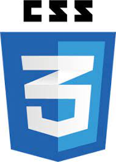
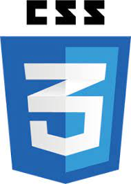

¡Bienvenido a mi landing page!
Hola, soy Frank Marí Del prado.
Tengo 25 años, nací en el 1998 y desde que tengo uso de razón tengo una curiosidad indomable,
por eso me adentré en el mundo de la programación.
Al terminar bachillerato, me lancé hacia el sueño de mi vida, ser Policía.
Fueron unos años complicados, a base de compaginar prepararme la oposición, trabajar y el entrenamiento físico,
pero con esfuerzo y constancia (base de todo éxito), lo conseguí.
Llevo 3 años prestando servicio,
y nada de lo descrito anteriormente me motivó para echar la toalla, al contrario, fui aumentando mis ganas de
superarme físicamente en el deporte de contacto (Artes Marciales Mixtas, Jiu-jitsu Brasileño, etc.) y superarme
intelectualmente, ya sea por cuenta propia mediante la lectura o investigación de los temas en los que tengo
interés (suele ser economía, filosofía-política, desarrollo personal, etc.) o mediante el estudio de este ciclo formativo superior actualmente.
Y hasta aquí una breve descripción de quién soy, a qué me dedico, y lo que me interesa actualmente.
Mis Proyectos
Pinchando aquí, redirigirá a la sección de 'Contacto', donde puedes acceder a alguno de mis proyectos más destacados en Github.

Formulario de Contacto
Mi Currículum
Actualmente cursando el Ciclo de Formación Superior en La Unir, en el que también desarrollamos diferentes proyectos.
Aquí puedes encontrar más información sobre mi experiencia y habilidades personales y profesionales.
 


Contacto
Puedes contactarme a través del anterior formulario o, a través de mis redes sociales que te dejo a continuación: